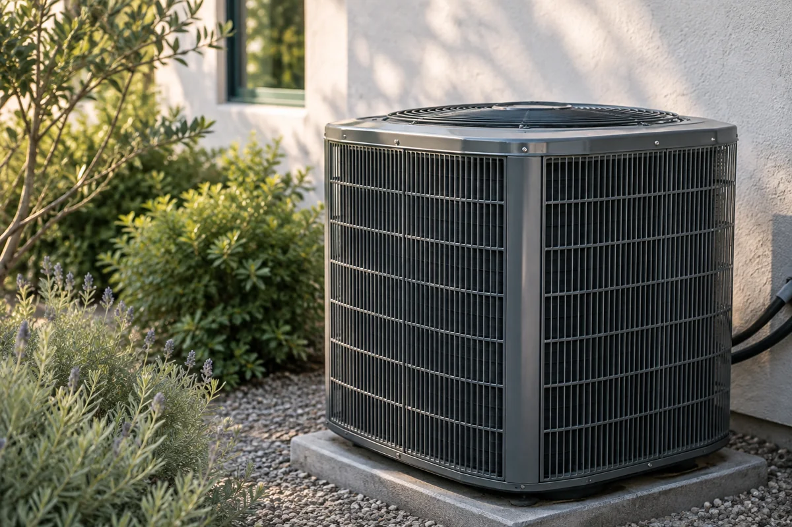
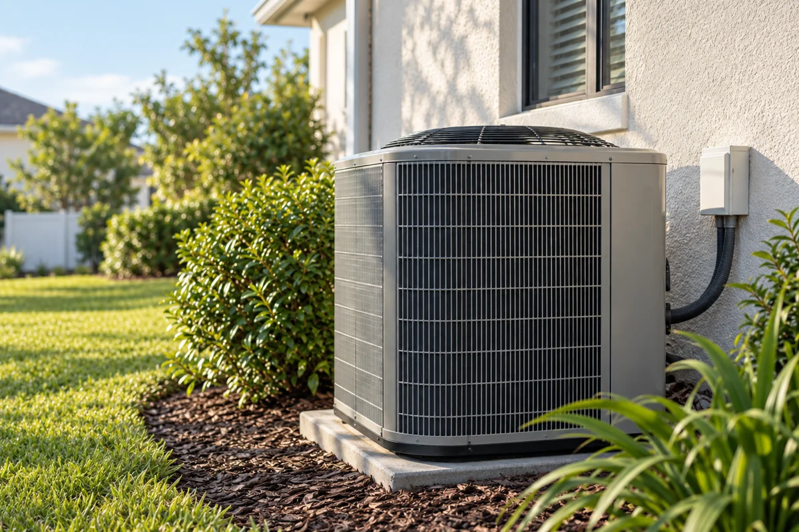
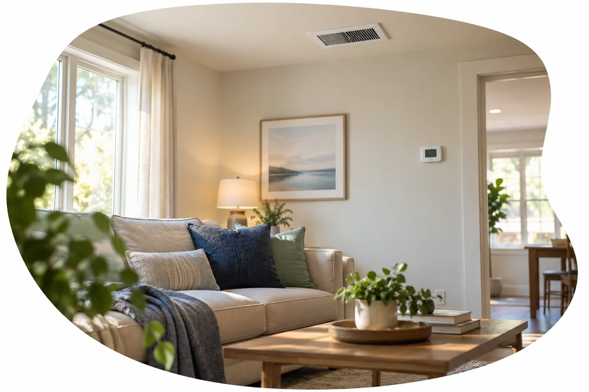

01 / Repair
Something doesn’t feel right.
Warm air, an unfamiliar sound, or a concern that keeps returning? Describe the symptom without having to diagnose it.
Explore repair ↗A clearer next step for your comfort
Tell us what you’re noticing. Explore how repair, maintenance or an assessment could begin.
Explore a service request ↗Illustrative process. A request is not a confirmed appointment.

Three ways to begin
01 / Repair
Warm air, an unfamiliar sound, or a concern that keeps returning? Describe the symptom without having to diagnose it.
Explore repair ↗
02 / Maintenance
Ask about the checklist, equipment covered and any work priced separately. The actual scope belongs to your contractor.
Explore maintenance ↗
03 / Replacement & assessment
A new home, recurring issue or changing system needs can start with questions and an assessment.
Explore assessments ↗A fictional service story · proposed process
Not an actual job, invoice, payment or repaired-system record.
Repair / describe what you notice
You don’t need a model number or a diagnosis to ask for help.
These are conversation prompts, not diagnoses. Any findings, proposed work and approval would be recorded separately.
Actual fees, availability, response times and warranty terms need contractor confirmation.
Describe a repair concern ↗Maintenance / understand the scope
Ask about the equipment, checklist and exclusions before deciding.
Checklist, visit frequency, filters, coil access and price are unconfirmed. No universal plan or performance guarantee is offered here.
Ask about maintenance ↗Replacement & assessment / make an informed decision
Explore the current concern, a new-home orientation or whether replacement needs a separate assessment.
Equipment condition, humidity concerns, comfort goals and previous service history can guide the conversation. They don’t establish a diagnosis or justify replacement on their own.
No price, sizing, savings, rebate or warranty promise is inferred.
Request assessment information ↗About / facts before promises
This reusable example shows how an HVAC website could explain service clearly.
The business identity is supplied where available. Team, license, insurance, years in business, hours, fees, testimonials and service area remain unconfirmed. Illustrative images are never presented as staff or completed jobs.
The requester, access contact, work approver, payer and permitted update recipient can be different people. A service request should explain who may approve work and who may receive updates.
Explore the request process ↗Contact & service area / an honest next step
Start small or describe the full request.
Service area, hours, fees and contact details are unconfirmed. Ask whether your area is served. No invented map, phone number or calendar availability appears.
Practice only. Enter fictional details. Nothing here is sent, booked, charged or saved to an HVAC company.
Unavailable in this Lab. A native booking option needs verified account/form settings, qualified crew, capacity, scope, travel and confirmation. This example reserves no time.
The other side / phone owner practice
Read the request and ask for missing details before offering an appointment or estimate.
Simulated owner workflow. All practice data stays in this page and clears on reload. No reply is sent.
Fictional example: cooling feels uneven. Service area and approval contact need clarification.
Your website / continue with FAMtastic
The HVAC interactions above are illustrative. Your FAMtastic account and website interview use the existing verified-email process.
Continue to my website interview ↗A direction preference does not approve a service, final design or campaign email.